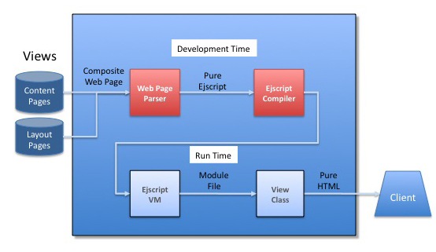

Quick Nav
See Also
Using Ejscript
The Ejscript Web Framework makes it dramatically easier to create dynamic web applications. The web framework provides an application generator, templating engine, a powerful Model/View/Controller framework and a library of Ajax view controls to take the tedium out of creating web applications. Via this framework, Ejscript drastically reduces the number of lines of code you need to write for a compelling, dynamic web application.
This document describes the Ejscript Web Framework and how Ejscript is embedded in web servers to run web applications and respond to web requests. It describes the flow of execution and the main processing components.
NOTE: Ejscript is separate product to Appweb. However, Appweb provides a request module and handler to support the Ejscript framework. The Appweb opens source binary distribution includes the Ejscript web framework. Commercial distributions will require a separate Ejscript license.
See also the Ejscript Web Site.
Ejscript Web Framework Architecture
Ejscript uses JavaScript for server-side web programming. Using the same language in the client and server makes web programming that much easier.
The Ejscript web framework builds upon the Ejscript core language and provides a web request handler, a Model/View/Controller application framework and an edit-and-continue development model.

The main components of the Ejscript Web Framework:
- Web Server Interface - Framework hosting and request handler
- Application Generator - for applications, scaffolds and stubs
- Web Page Parser - Parses web pages, applies view layouts and emits pure JavaScript
- Framework Classes - MVC, Http Request and Ajax view classes
- Ejscript compiler - Creates and caches application byte code
- Ejscript Virtual Machine - executes the byte code and formats the response
Web Server Interface
The Ejscript Web Server Interface (or web interface) provides the interface and coupling between Ejscript and the web server. It accepts incoming web requests from the web server, routes the request to the appropriate application or ejscript web page, processes the output and passes it back to the web server for transmission to the client.
Appweb Hosting
Appweb hosts Ejscript via a loadable module mod_ejs for the highest performance.
Ejscript application will typically define an Appweb route using the EjsAlias directive the EjsAppAlias directive. For example:
EjsAlias /myAppName/ "/Directory/to/myApp"
This instructs Appweb to send all requests with the URI prefix "myAppName" to Ejscript for routing and processing.
Form Data
The web interface converts incoming post and form data into a format suitable for easy processing by Ejscript applications. Traditionally, form data is passed to web applications by environment variables. But this format is often clumsy, doesn't scale and does not map well onto an object-oriented language such as JavaScript.
Ejscript replaces environment variables with a params[] collection object and it transparently converts form data into a nested collection of objects. It automatically converts dot separated form names into objects that are addressable by dot notation.
Request State
The web interface will construct request, response and host objects that store request state. Ejscript avoids the normal overhead in creating and populating these objects by using virtual, lazy construction. Consequently, Ejscript applications incur minimal overhead when accessing request state.
Interpreter Hosting
A high performance web server must accept incoming requests, route to the appropriate request handler, initialize the handler including necessary interpreters, gather response data, transmit to the client and then tear down the handler. And this must be done many times per second, ideally hundreds of times per second for dynamic content.To do this effectively, Ejscript maintains a pool of pre-created interpreter instances, complete with all the requisite system classes and web framework. When incoming requests arrive, the web interface assigns one of the pre-created interpreters to the new request. The interpreter pool saves memory by sharing the system types, classes and web framework.
Application Paradigms
The Ejscript web framework supports three paradigms:
- Stand-alone web pages with embedded Ejscript
- Pure Ejscripts
- Ejscript Model/View/Controller Applications
These paradigms can be combined in a single application if desired.
Ejs Web Pages
Ejs web pages are HTML web pages with embedded Ejscript code. They typically have a .ejs extension and may use layout pages to define the look and feel of the application. They do not use the full Model, View, Controller paradigm, nor do they use the Ejscript mvc application generator. Ejs web pages often use a simple "Post-Back" paradigm where form data is posted back to the same page.
Ejscript
Ejscript 2.X adds a new application paradigm — simple scripts. Appweb can route URI requests to simple Ejscripts which then respond by writing status and data back to the client. These Ejscripts typically have a .es extension. They do not use layout pages and typically don't use the Model, View, Controller facilities.
MVC applications are more powerful. They have database models, controllers and views. They combine template ejs web pages with the power of controllers. MVC applications typically start life by using the mvc application generator.
Application Generator
The Ejscript mvc application generator generates new applications, scaffolds, controllers, views, models and data migrations. It creates the application directory and populates it with the necessary directories, configuration files and stubs to begin the application.
The application generator is named mvc.
To create a new application called test:
mvc generate app test
This will create the following directories:
- test/cache
- test/controllers
- test/db
- test/layouts
- test/models
- test/src
- test/static
- test/views
It will also create the following files:
- test/ejsrc
- test/layouts/default.ejs
- test/src/App.es
- test/controllers/Base.es
- test/views/Base/index.ejs
- test/README
Ejscript will automatically compile and load MVC components as required. You can also pre-compile your entire application via::
mvc -v compile
Model, View, Controller Framework
A Model View Controller framework, also known as MVC, is a proven paradigm for organizing web applications. The model manages the state of the application including the database. The controller manages the application, responding to inputs and invoking the relevant views to generate the user interface.
Originally developed in the '70s, it has been more recently adapted for web applications and been popularized by frameworks such as Ruby on Rails. Ejscript uses the same paradigm with a JavaScript and embedded spin.
Models
For object oriented languages such as Ejscript, there is sometimes a mismatch between relational database data and the JavaScript objects that are used to represent and manage that data. To solve this problem, Ejscript provides an Object Relational Mapping (ORM) layer to make it easy to read, modify and write database data. ORM layers map database tables to classes, rows to object instances and columns to properties of the classes and objects. If a database has a table named Users, then there would be a model class named User.
When Ejscript reads records from a database table it constructs an instance of the a model class and dynamically creates properties for each of the columns in the table. It also maps the SQL data types into equivalent JavaScript types. This allows a natural access and update paradigm where the application can deal with JavaScript objects while the ORM takes care of reading, querying and updating the database.
The web framework provides a powerful set of access methods to query, join, update and deal with SQL tables. You can use higher level functions where the ORM generates appropriate SQL statements or you can construct and issue your own SQL.
The ORM Methods include: belongsTo, find, findAll, findOneWhere, findWhere, getColumnNames, getColumnTitles, getDb, getKeyNme, getNumRows, getTableName, hasAndBelongsToMany, hasMany, remove, save, saveUpdate, setKeyName, setTableName, sql and trace.
The Ejscript ORM currently only provides one database connector for SQLite. It is expected that a future release will add support for other major database engines.
Views
The View part of the Ejscript web framework is responsible for generating the user interface. It typically takes an input HTML web page with embedded Ejscript and generates the HTML response to send back to the client. However, views can also be generated by controllers and thus require no HTML page.
The Ejscript View framework provides:
- A templating engine for master layout pages
- Embedded server-side JavaScript in HTML
- A rich library of methods to render output
- A consistent interface to Ajax libraries
- A suite of view dynamic user controls such as table, chart, tab, tree, ...
View Pipeline
The View mechanism consists of a processing pipeline that progressively transforms the web page. Views start with a partial HTML view page which typically contains embedded Ejscript. This is parsed by the Web Page Parser and combined with layout views to create a composite web page. This is then parsed and converted to pure Ejscript code which is compiled and cached in a module file (.mod). The module file can be run repeatedly by the VM to generate the required HTML for the user view. 
The time intensive part of this pipeline processing occurs once at development time. This is comprised of the pipeline stages up to and including compilation. The often less costly run-time processing for each request consists of reading the module file and executing it in the VM.
Web Page Parser
The Web Page Parser is a templating engine and embedded script parser. It understands and processes embedded javascript and layout directives to expand the view content pages and create a composite page that represents an entire web page that the user will see.
A templating engine is an important part of a view framework. It allows you to specify the "look and feel" and standard components of a web application in one place, and then reuse the "look and feel" in content pages by simply referencing a layout page. The layout page typically contains the top level HTML structure, style sheets and graphic content that is standard on every page. Is also specifies the location to insert content from content pages. The content pages focus on the content and data unique to that page and they do not replicate the standard content specified in the master page. In this way, changing the layout page in once place will automatically change every web page in the application.
The web page parser reads content view page containing embedded ejscript code (with .ejs extension). It blends the content page with the layout pages and converts it to a pure Ejscript program (with .es extension) which represents the composite web page that the user will see.
Here is a simple layout page
<html>
<head>
<title>@@title</title>
<link rel="stylesheet" type="text/css" href="@@style"/>
</head>
<body>
<img src="banner.jpg">
<%@ content %>
</body>
</html>
The <%@ content %> directive instructs the web page parser to insert the content page at this location. The @@title and @@style directives access Ejscript variables set to the required content title and style sheet at run-time.
Here is a simple content page:
<h1>Hello World</h1> <p>Today is <%= new Date %>The web parser supports the following web page directives. These can be used in layout or content pages:
- <%= ejscript expression %>
- @@variable
- <% ejscript code %>
- <% include "filename" %>
- <%@ layout "file" %>
The <%= ejscript expression %> directive will evaluate the expression and substitute the resulting expression value.
The @@variable directive is a shortcut for <%= expression %>.
The <% ejscript code %> directive will invoke the given code. No automatic substitution of output occurs. However, the code can call "write()" to generate output in the place of the directive.
The <% include "filename" %> directive will include the given file name at the location of the directive when parsing the web page. Include directives can be nested.
The <%@ layout "file" %> directive specifies the name of the layout page. By using this directive in layout pages, you can build up the web page layout by nesting layout pages. If omitted in content pages, which is usually the case, the default layout is views/layouts/default.ejs. If omitted in layout pages, it is assumed the layout page is the top level layout page.
The web parser supports the following web page directives in layout pages:
- <%@ content %>
This specifies the location for the content page data.
Note: you do not have to use layout pages. Simple stand-alone web pages without layouts code are supported. To disable templating, use a <%@ layout="" %> directive.
View Controls
The web framework provides a suite of view controls for common UI elements. These include button, chart, checkbox, form, image, label, link, list, progress bar, radio button, table, tabs, text, textarea and tree. The purpose of the controls is to be a themeable and skinnable set of UI controls that provides a higher level of functionality than bare HTML. For example, the table control allows the easy display of database data with sortable rows and selectable columns.
The view controls are implemented via View connector modules that communicate with the web framework's View connector interface. This is a modular interface for industry Ajax and UI toolkits. The Ejscript web framework provides a HTML view connector, and a Google Ajax Visualizer connector. Users can select on a control by control basis, what connector module to use for a specific control. Additional Ajax connector libraries will be supported in the future.
The controls are bindable to data stored in models and many controls can dynamically refresh their content using Ajax techniques without redisplaying the entire page.
Views can also use a library of view methods to generate and manage HTML output and responses. These include: redirect, render, setCookie, setHeader, write, writeHtml and writeRaw.
Controllers - Responding to Requests
The role of the controllers is to manage the application and respond to inputs so controllers form the heart of the web application. Controllers are typically bound to various URIs so that user input is routed to specific actions within the controls. When a controller receives an incoming Http message, the requested action is run. The action will typically mutate the state of the application in some manner and then render a response view to the user.
Routing
The Ejscript web framework routes incoming URI requests by tokenizing the request URI. The format used is:
http://site/APP/CONTROLLER/ACTION
Where APP is the name of the application, CONTROLLER the name of the controller and ACTION is the name of an action method within the controller. When such a URI request is received by Ejscript, it routes the request to the specified controller and invokes the action method. The routing format is currently fixed and not configurable but it is anticipated that user controlled routing will be added in a future release.
Actions
When a controller receives a request to service, it is dispatched to the action method specified in the URI. The action is a simple function defined with an "action" namespace qualifier. The job of the action method is:
- Respond to the request
- Render a response view back to the client
The action responds to the request by examining the request form parameters, query string and other Http and application state information.
Here is a sample action method that updates a database table based on user submitted form data in "params".
action function update() {
/* Update */
portfolio = Portfolio.find(params.id)
if (portfolio.saveUpdate(params.portfolio)) {
inform("Portfolio updated successfully.")
redirect("list")
}
}
An action method can explicitly render data by calling one of the render() methods. It can redirect the client to a new URI via the redirect() method. Manual rendering is ideal for RESTful web services, particularly when coupled with the XML/E4X capabilities of Ejscript.
If the action method does not explicitly render any data, the web framework will automatically render a view page of the same name as the action method. That view has access to the controller and request state.
Other methods used by Controller actions include: cache, createSession, destroySession, escapeHtml, html, inform, keepAlive, makeUrl, render, renderFile, renderXml, reportError, setCookie, setHeader, setHttpCode, setMimeType, warn and write.
Development and Deployment
There are two phases of use for Ejscript: Development and Deployment. When developing, developers need quick turn-around with rapid test-modify-build cycles. Interpreted languages have a distinct advantage over traditional compiled languages when used for such iterative or Agile Web Development. Ejscript offers the best of both. When developing, Ejscript runs as an interpreted environment. Changes made to web pages or scripts cause the files to be parsed and compiled without restarting the web server. Simply reloading the web pages in the browser will trigger the changed page to be rebuilt.
When ready for deployment, the entire application can be compiled into a single module file for easy deployment.